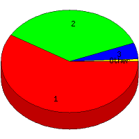

Week of 8/22/2010 to 8/28/2010: Top
4 of
4 File Types (Extensions)
Sorted by Access Count
Individual file types as determined by file extensions. All URLs that
do not contain an extension are counted as directories.

| Rank |
Type |
Accesses |
% |
Bytes |
% |
| 1 |
html
|
73 |
58.87 |
763,202 |
79.60 |
| 2 |
Directory (folder)
|
44 |
35.48 |
181,504 |
18.93 |
| 3 |
ico
|
6 |
4.84 |
8,436 |
0.88 |
| 4 |
ru
|
1 |
0.81 |
5,672 |
0.59 |